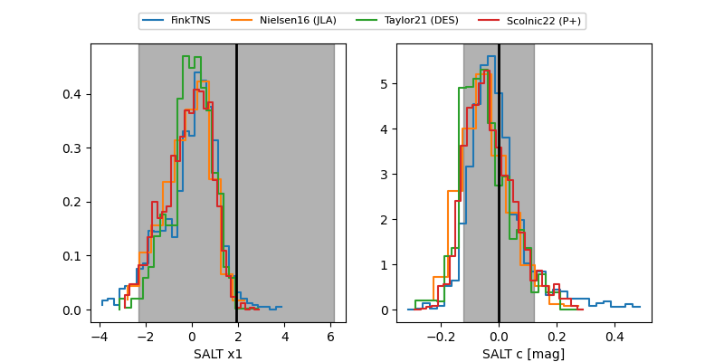

FINK: ZTF25abnqvlt
Lasair: ZTF25abnqvlt
ALeRCE: ZTF25abnqvlt
TNS: 2025xfs
YSE: 2025xfs
ZTF25abnqvlt (ztf,fink)
2025xfs (tns,yse)
equatorial (ra, dec) = (6.2833,-4.19430)
galactic (l, b) = (106.4759,-66.22202)

last ztfg=19.63, ztfr=20.16
3 ztfg, 3 ztfr detections